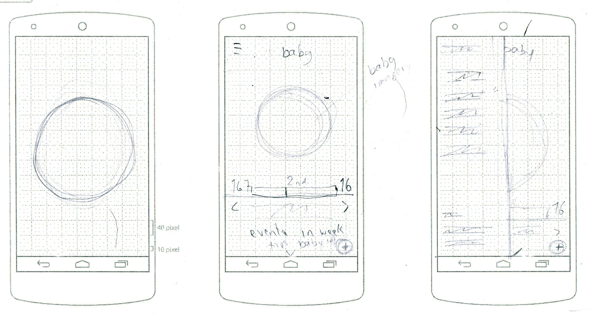

<main>

  <div class="grid pad-t-2 gutter">

    <div class="content gutter-half unit [ xs-1 s-1 m-1-3 l-1-3 ]">


  <input type="checkbox" class="nav-check hide-custom-input" id="nav-check">
  <!-- This is the button we’d click to open/close the navigation -->
  <label class="nav-label" for="nav-check">
    
    
  </label>
  <nav class="nav-toggle pin-t">
    <ul class="push-0">
      <li><a href="{{site.baseurl}}/illustration.html">Illustration</a></li>
      <li><a href="{{site.baseurl}}/applications.html">Applications</a></li>
      <li><a href="{{site.baseurl}}/motion.html">Motion</a></li>
      <li><a href="{{site.baseurl}}/mixed-media.html">Mixed Media</a></li>
      <li><a href="{{site.baseurl}}/branding.html">Branding</a></li>
    </ul>
  </nav>

        <div class="nav pad-top-half pad-bottom-half side-nav">
          <nav>
            <ul class="push-none list-group text-left giga pad-t-3">
              <li class="exa"><a href="{{site.baseurl}}/illustration.html">Illustration</a></li>
              <li class="nina gutter current"><a href="{{site.baseurl}}/applications.html">Applications</a></li>
              <li class="exa"><a href="{{site.baseurl}}/motion.html">Motion</a></li>
              <li class="exa"><a href="{{site.baseurl}}/mixed-media.html">Mixed Media</a></li>
              <li class="exa"><a href="{{site.baseurl}}/branding.html">Branding</a></li>
            </ul>
          </nav>
        </div>

      </div>

      <div class="unit [ xs-1 s-1 m-2-3 l-2-3 ]">
        <p class="center"itemprop="name">Doula</p>
        
        <p itemprop="description">Pregnancy can be a really scary time for a woman especially if it’s her first time being pregnant or if it’s an at-risk pregnancy. An app the can monitor mother’s and her baby’s stats to give her a piece of mind. The mother can also add family members to view her stats and the progression of her growing baby.The app showcases my cohesive use of colour and simple design. The simple design of the app lets the mother easily navigate through the app to look up information on her and her baby </p>
        
        

          <p itemprop="description">Doula is an app, that connects to a wearable belt that tracks the baby’s and mother’s stats.The app is split into three main sections. The first and primary section is that the app logs and informs you of your baby's stats as well as yourself. If the app detects something wrong an alert will be sent out to your support list for help as well as the nearest hospital.</p>
          
          

          <p itemprop="description">Which brings you to our secondary function is your support list. As said before all the people in your list will be notified if something is wrong. On their account, they can check up on mother and baby as well but only have access to what the mother has allowed them to see when she added them to her list. And finally, the medical section where the mother can look up the progress of her and the baby as well as look up symptoms and information on diet. </p>
          
          
          


      </div>

    </div>

</main>
